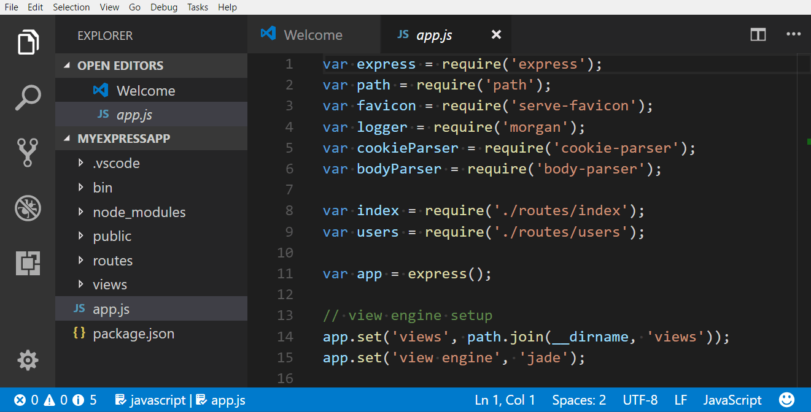
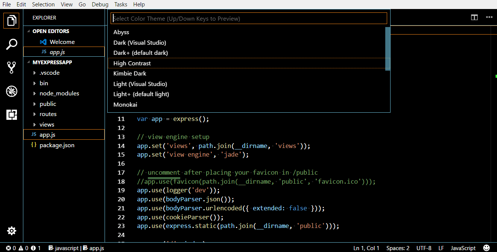
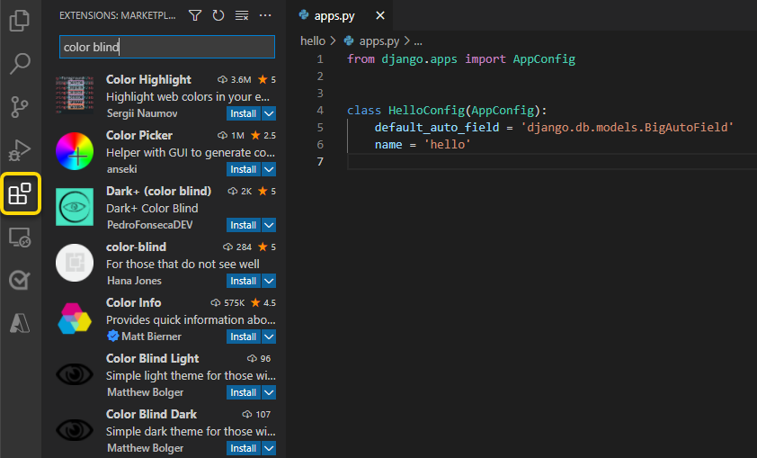
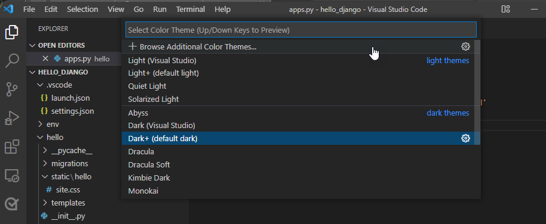
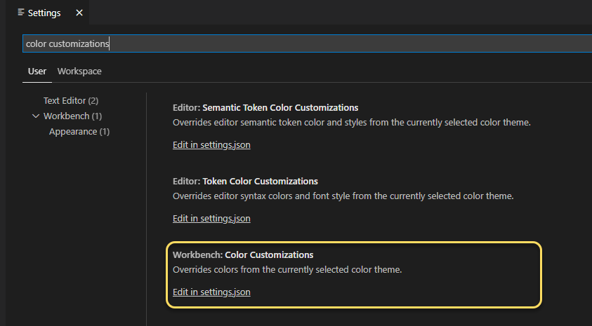
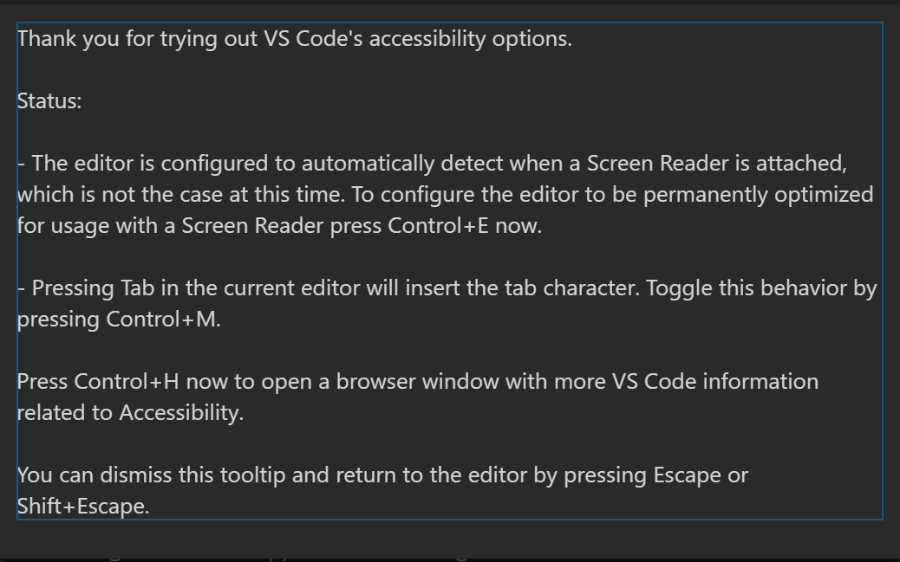
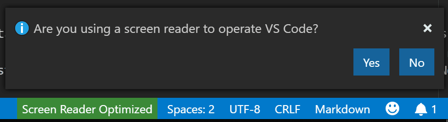

Accessibility
Visual Studio Code has many features to help make the editor accessible to all users. Zoom and High Contrast colors improve editor visibility, keyboard-only navigation allows use without a mouse, and the editor has been optimized for screen readers.
Zoom
You can adjust the Zoom level in VS Code with the View > Appearance > Zoom commands. The zoom level increases or decreases by 20% each time a Zoom command is executed.
- View > Appearance > Zoom In (⌘= (Windows, Linux Ctrl+=)) - increase the Zoom level.
- View > Appearance > Zoom Out (⌘- (Windows, Linux Ctrl+-)) - decrease the Zoom level.
- View > Appearance > Reset Zoom (⌘Numpad0 (Windows, Linux Ctrl+Numpad0)) - reset the Zoom level to 0.
Note: If you are using a magnifier make sure to hold the
altkey while viewing the hover to allow the mouse to move over the hover.

Persisted Zoom Level
When you adjust the zoom level with the View > Zoom In / Out commands, the zoom level is persisted in the window.zoomLevel setting. The default value is 0 and each increment/decrement changes the zoom level by 20%.
High Contrast theme
We support a High Contrast color theme on all platforms. Use File > Preferences > Color Theme (⌘K ⌘T (Windows, Linux Ctrl+K Ctrl+T)) to display the Select Color Theme dropdown and select the High Contrast theme.

Color vision accessibility
You can search for extensions in Visual Studio Marketplace that are compatible for color vision deficiency. Use the Extensions view ⇧⌘X (Windows, Linux Ctrl+Shift+X) and search for "colorblind" to populate relevant options.

Once you have installed a color theme from the Marketplace, you can change the color theme with File > Preferences > Color Theme (Code > Preferences > Color Theme on macOS) ⌘K ⌘T (Windows, Linux Ctrl+K Ctrl+T).

Recommended themes for color vision accessibility
- GitHub - Accessible to most forms of colorblindness and matches the themes in GitHub's settings.
- Gotthard - Optimized for approximately 20 programming languages.
- Blinds - Created with Deuteranopia in mind and possesses a high contrast color ratio.
- Greative - Considers both colorblindness and light sensitivity.
- Pitaya Smoothie - Accessible to most forms of colorblindness and compliant with WCAG 2.1 criteria for color contrast.
Customizing warning colors
The default Color Theme for VS Code is Dark+. However, you can customize both the theme and property colors in the user interface.
Note: Visit Customizing a Color Theme to learn more about overriding the colors in your current theme.
To customize the error/warning squigglies, go to File > Preference > Settings (Code > Preference > Settings for macOS) to find user settings. Search for "color customizations", find the Workbench: Color Customizations setting, and open your user settings.json by selecting Edit in settings.json.

In settings.json file, nest the following code inside the outermost curly braces. You'll be able to assign a color to each object by entering a hex code.
"workbench.colorCustomizations": {
"editorError.foreground": "#ffef0f",
"editorWarning.foreground": "#3777ff"
}
In the example below, the warning color is applied when a comma is missing after a JSON item.

editorError.foreground- Overrides the wavy line beneath an error.editorWarning.foreground- Overrides the wavy line beneath a warning.editorError.background- Overrides the highlight color of an error.editorWarning.background- Overrides the highlight color of a warning.
Assigning a color to the background of editorError and editorWarning also helps to identify potential issues. The color that you choose will highlight the respective error or warning. The colors shown in the example above #ffef0f (yellow) and #37777ff (blue), are more accessible to individuals with common forms of color vision deficiencies.
Selecting accessible colors
The accessibility of colors is subjective to the type of anomalous trichromacy (color blindness). The level of severity ranges per person and can be divided into four condition types:
| Condition | Type |
|---|---|
| Deuteranopia | Defined by the reduced sensitivity to green light. It is the most common form of color blindness. |
| Protanopia | Defined by the reduced sensitivity to red light. |
| Tritanopia | Defined by the reduced sensitivity to blue light. This condition is considered rare. |
| Monochromia | Also referred to as, achromatopsia and is defined by the inability to see all colors. This is the rarest form of color blindness. Go to Foundation for Fighting Blindness for more information. |
One of the best approaches to selecting the best colors for a specific condition is to apply complementary colors. These are colors located opposite of one another on a color wheel.

Note: For more information on finding complementary colors, go to Adobe Color to access the color blind simulator and interactive color wheel.
Keyboard navigation
You will find that VS Code provides an exhaustive list of commands in the Command Palette (⇧⌘P (Windows, Linux Ctrl+Shift+P)) so that you can run VS Code without using the mouse. Press ⇧⌘P (Windows, Linux Ctrl+Shift+P) then type a command name (for example 'git') to filter the list of commands.
VS Code also has many preset keyboard shortcuts for commands. These are displayed to the right of the command in the Command Palette.

You can also set your own keyboard shortcuts. File > Preferences > Keyboard Shortcuts (⌘K ⌘S (Windows, Linux Ctrl+K Ctrl+S)) brings up the Keyboard Shortcuts editor where you can discover and modify keybindings for VS Code actions. See Key Bindings for more details on customizing or adding your own keyboard shortcuts.
For a quick navigation across the workbench, we recommend using Focus Next Part (F6) and Focus Previous Part (⇧F6 (Windows, Linux Shift+F6)) commands.
Anchor selection
To make it easier to start and end selection using the keyboard we have four commands: Set Selection Anchor (⌘K ⌘B (Windows, Linux Ctrl+K Ctrl+B)), Select From Anchor to Cursor (⌘K ⌘K (Windows, Linux Ctrl+K Ctrl+K)), Cancel Selection Anchor (Escape) and Go to Selection Anchor.
Tab navigation
You can use the Tab key to jump between VS Code UI controls. Use Shift+Tab to tab in reverse order. As you tab through the UI controls, you can see an indicator around the UI element once the element gains focus.
All elements in the workbench support tab navigation, but workbench toolbars and tab lists have only one tab stop, to avoid having too many. Once the focus is on a toolbar or a tab list, you can use the arrow keys to navigate within them.
Tab trapping
By default, pressing the Tab within a source code file inserts the Tab character (or spaces depending on your Indentation setting) and does not leave the open file. You can toggle the trapping of Tab with ⌃⇧M (Windows, Linux Ctrl+M) and subsequent Tab keys will move focus out of the file. When default Tab trapping is off, you will see an indicator in the Status Bar.

You can also toggle Tab trapping from the Command Palette (⇧⌘P (Windows, Linux Ctrl+Shift+P)) with the Toggle Tab Key Moves Focus action.
Read-only files never trap the Tab key. The Integrated Terminal panel respects the Tab trapping mode and can be toggled with ⌃⇧M (Windows, Linux Ctrl+M).
Screen readers
VS Code supports screen readers in the editor using a strategy based on paging the text. We have tested using the following screen readers: NVDA and JAWS on Windows, VoiceOver on macOS and Orca on Linux.
For NVDA, we recommend staying in focus mode and using the hotkeys to navigate, instead of using browse mode.
The Go to Next/Previous Error or Warning actions (F8 and ⇧F8 (Windows, Linux Shift+F8)) allow screen readers to announce the error or warning messages.
When the suggestions pop up, they will get announced to screen readers. It is possible to navigate the suggestions using Ctrl+Up and Ctrl+Down, you can dismiss the suggestions with Shift+Escape and if suggestions get in your way, you can disable the auto-popup of suggestions with the editor.quickSuggestions setting.
The Go to Next/Previous Difference actions (F7 and ⇧F7 (Windows, Linux Shift+F7)), when in a diff editor pane, will bring up the Diff Review pane, which allows the navigation of the diffs, presented in a unified patch format. Arrow Up and Arrow Down can be used to navigate through the unchanged, inserted, or deleted lines. Pressing Enter will return focus to the modified pane of the diff editor at the selected line number (or closest still existing line number in case a deleted line is selected). Use Escape or kb(Shift+Escape) to dismiss the Diff Review pane.
Accessibility help
You can press ⌥F1 (Windows Alt+F1, Linux Shift+Alt+F1) to trigger the Show Accessibility Help dialog while in an editor to check the state of various accessibility options in VS Code:

Screen reader mode
When VS Code detects that a screen reader is being used, it goes into screen reader optimized mode for the UI such as the editor and Integrated Terminal. The Status Bar displays Screen Reader Optimized in the lower right and you can exit screen reader mode by clicking on the display text.

Certain features such as folding and minimap (code overview) are disabled when in screen reader mode. You can control whether VS Code uses screen reader mode with the Editor: Accessibility Support setting (editor.accessibilitySupport) and the values are on, off, or the default auto to automatically detect a screen reader through querying the platform.
Terminal accessibility
Output in the Integrated Terminal can be navigated through by using the "navigation mode" commands available in the Command Palette (press F1 and search for "terminal navigation mode").
Minimum contrast ratio
The setting terminal.integrated.minimumContrastRatio can be set to a number between 1 and 21, this will cause the text color to adjust luminance until the contrast ratio is met or pure white (#FFFFFF) black (#000000) is hit.
Note that the terminal.integrated.minimumContrastRatio will not apply to powerline characters.
Status Bar accessibility
Once a focus is in the Status bar via Focus Next Part (F6) arrow navigation can be used to move focus between Status bar entries.
Diff editor accessibility
There is a review pane in the Diff editor that presents changes in a unified patch format. You can navigate between changes with Go to Next Difference (F7) and Go to Previous Difference (⇧F7 (Windows, Linux Shift+F7)). Lines can be navigated with arrow keys and pressing Enter will jump back in the Diff editor and the selected line.
Debugger accessibility
The VS Code debugger UI is user accessible and has the following features:
- Changes in debug state are read out (for example 'started', 'breakpoint hit', 'terminated', ...).
- All debug actions are keyboard accessible.
- Both the Run and Debug view and Debug Console support Tab navigation.
- Debug hover is keyboard accessible (⌘K ⌘I (Windows, Linux Ctrl+K Ctrl+I)).
- Keyboard shortcuts can be created to set focus to each debugger area.
Audio Cues
Audio cues indicate if the current line has certain markers such as: errors, warnings, breakpoints, folded text regions or inline suggestions.
They are played when the primary cursor changes its line or the first time a marker is added to the current line. Audio cues are enabled automatically when a screen reader is attached, but can also be controlled by the settings audioCues.*.
The command Help: List Audio Cues lists all available audio cues, lets you hear each audio cue as you move through the list, and review which cues are currently enabled.
Hover accessibility
Some hovers cannot be hovered normally which makes them hard to use with screen magnifiers. To work around this, while a hover is active hold the Alt or Option key to "lock" it in place such that it doesn't hide when hovered. Releasing the key will unlock the hover so it acts like normal.
Current known issues
VS Code has some known accessibility issues depending on the platform. Here's a full list of VS Code accessibility issues.
macOS
There is screen reader support for the editor with VoiceOver.
Linux
VS Code works well with the Orca screen reader. If on your Linux distribution Orca does not read the editor content:
- Make sure to have the setting
"editor.accessibilitySupport": "on"in VS Code. You can do this using settings, or by running the Show Accessibility Help command and pressing Ctrl+E to turn on accessibilitySupport. - If Orca is still silent, try setting
ACCESSIBILITY_ENABLED=1as an environment variable.
After enabling that setting, VS Code should work with the Orca screen reader.
Next steps
Read on to find out about:
- Visual Studio Code User Interface - A quick orientation to VS Code.
- Basic Editing - Learn about the powerful VS Code editor.
- Code Navigation - Move quickly through your source code.